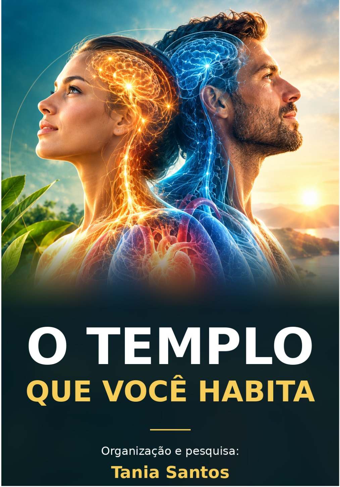

01
O corpo como templo
Reflexões bíblicas sobre valorizar a vida e cuidar do corpo que Deus nos confiou.
Fé • Cuidado • Esperança
Cuide do corpo. Alimente a esperança. Fortaleça a fé.
Descubra o que a Bíblia e os escritos de Ellen G. White ensinam sobre cuidar do corpo, da mente e da vida espiritual — com reflexões acolhedoras e passos práticos para o dia a dia.
Download direto, sem formulário. Leia no seu ritmo e consulte quando quiser.

Um convite ao cuidado
Em meio à correria e às preocupações, é fácil deixar o próprio cuidado para depois. A Bíblia nos convida a olhar para o corpo com gratidão, responsabilidade e propósito.
O Templo Que Você Habita reúne ensinamentos bíblicos, reflexões dos escritos de Ellen G. White e sugestões práticas para inspirar escolhas conscientes — sem fórmulas mágicas e sem cobranças pela perfeição.
Por dentro do e-book
Conheça os temas que você encontrará neste material gratuito.
Reflexões bíblicas sobre valorizar a vida e cuidar do corpo que Deus nos confiou.
Uma abordagem que considera corpo, mente e vida espiritual, com respeito a cada jornada.
Alimentação equilibrada, exercício, água, sol, temperança, ar puro, descanso e confiança em Deus.
Princípios de equilíbrio, hábitos cotidianos e escolhas conscientes.
Reflexões sobre esperança, gratidão, apoio e a importância de procurar ajuda quando necessário.
Orientações práticas para refletir sobre a rotina de descanso e o repouso semanal.
Inclui também um plano de 7 dias e folhas de atividades.
Baixar gratuitamente ↓Pequenos passos, com propósito
O material propõe uma jornada gradual: ler, refletir e escolher um passo possível para sua rotina.
Para sua leitura pessoal
Os princípios de cuidado não são garantias de que nenhuma doença acontecerá. O material incentiva hábitos conscientes e reconhece a importância do acompanhamento profissional.
Seu próximo passo começa aqui
Reserve um momento para ler, refletir e descobrir pequenos passos que façam sentido para sua rotina.
O Templo Que Você Habita
Organização e pesquisa: Tania Santos
O arquivo será baixado diretamente para seu dispositivo.